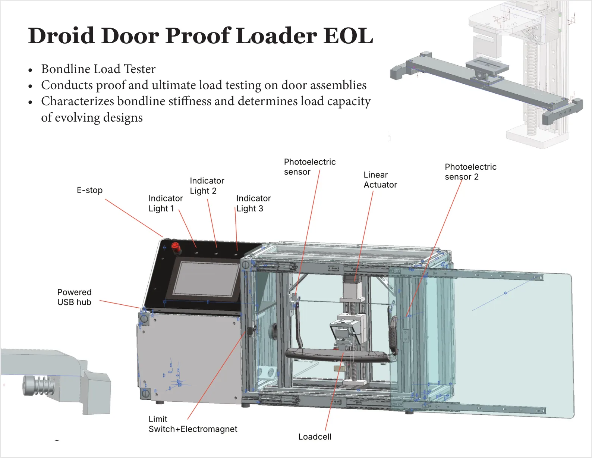

Droid Door Proof Loader EOL
Bondline load tester
Conducts proof and ultimate load testing on door assemblies while characterizing bondline stiffness and evolving load capacity.
Project details
Role
- Designed enclosure, linear actuator load path, sensor placement, and operator controls.
- Integrated loadcell feedback, switches, photoelectric sensors, and safety-oriented enclosure layout.
- Built and refined the tester with detailed mechanism and fixture components.
Result
An EOL proof-load station that turns evolving door designs into measurable stiffness and load-capacity data.